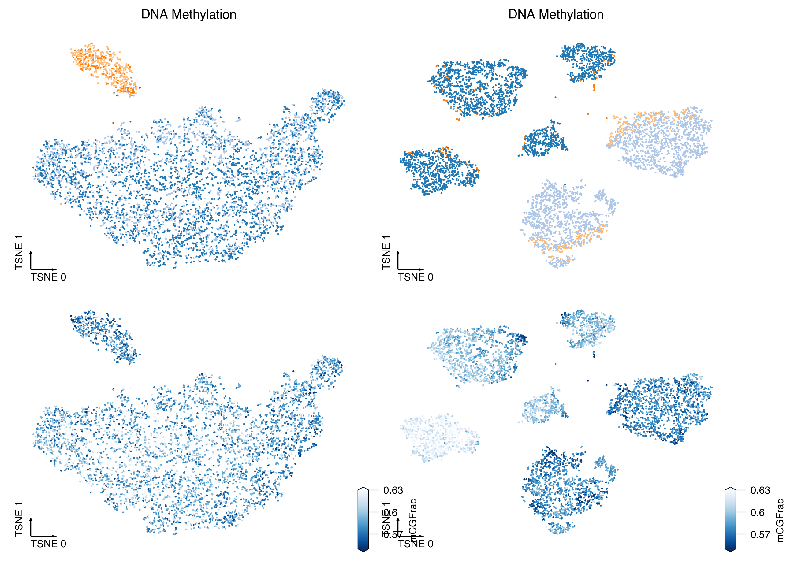
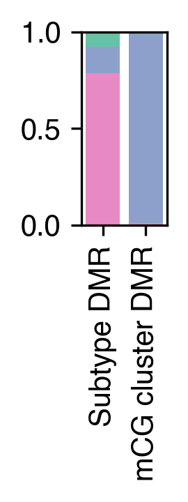

7. Epi TPB#
Part of the Fig. 6 chapter — see it for the panel-by-panel map. The first code cell sets ENTEX_ROOT and activates the no-overwrite guard (see the Reproduction guide). Outputs shown are the author’s original run.
📥 Required input files#
This notebook reads the following files (paths resolve from ENTEX_ROOT/REF_ROOT; the setup cell sets them). See the chapter’s inputs.md for RAW-vs-derived tags.
f'{outdir}npc.tsv'· metadataf'{outdir}5kCG100k3C_summary.csv.gz'· joint summary objf'{indir}subtype_meta.tsv'· metadataf'{outdir}L2/{ct}/5kCG_embed.h5ad'· embedding h5adf'{outdir}L2/{ct}/100k3C_embed.h5ad'· embedding h5adf'{outdir}donor3ccluster_dmr'· DMRf'{outdir}mccluster_dmr'· DMRf'{outdir}donor3ccluster_dmr_mccomp.bed'· DMRf'{outdir}mccluster_dmr_mccomp.bed'· DMR
# === Reproduction setup — edit ENTEX_ROOT / REF_ROOT for your machine ===
import os, sys
ENTEX_ROOT = os.environ.get('ENTEX_ROOT', '/large_storage/zhoulab/zhoujt/project/ENTEx')
REF_ROOT = os.environ.get('REF_ROOT', '/large_storage/zhoulab/ref')
BOOK_ROOT = os.environ.get('BOOK_ROOT', f'{ENTEX_ROOT}/analysis/HumanCellEpigenomeAtlas')
sys.path.insert(0, BOOK_ROOT)
os.chdir(f'{ENTEX_ROOT}/analysis') # original working directory
import repro_guard # no-overwrite guard (default: skip existing)
from glob import glob
import anndata
import matplotlib as mpl
import matplotlib.pyplot as plt
import numpy as np
import pandas as pd
import scanpy as sc
import scanpy.external as sce
import seaborn as sns
from ALLCools.clustering import *
from ALLCools.integration.seurat_class import SeuratIntegration
from ALLCools.plot import *
from sklearn.metrics import pairwise_distances, roc_auc_score
from sklearn.preprocessing import normalize
# mpl.use('agg')
mpl.style.use("default")
mpl.rcParams["pdf.fonttype"] = 42
mpl.rcParams["ps.fonttype"] = 42
mpl.rcParams["font.family"] = "sans-serif"
mpl.rcParams["font.sans-serif"] = "Helvetica"
mpl.rcParams["svg.fonttype"] = "none"
import warnings
warnings.filterwarnings("ignore")
def dump_embedding(adata, name, n_dim=2):
# put manifold coordinates into adata.obs
for i in range(n_dim):
adata.obs[f'{name}_{i}'] = adata.obsm[f'X_{name}'][:, i]
return adata
indir = f'{ENTEX_ROOT}/'
outdir = f'{ENTEX_ROOT}/clustering/merged/'
npc = pd.read_csv(f'{outdir}npc.tsv', sep='\t', header=None, index_col=0, names=['npc_cg', 'npc_3c'])
meta = pd.read_csv(f'{outdir}5kCG100k3C_summary.csv.gz', index_col=0, header=0)
celltype_df = pd.read_csv(f'{indir}subtype_meta.tsv', sep='\t', header=0, index_col=0).fillna('')
# celltype_df['celltype_abbr'] = celltype_df['L1_annot'] + ' ' + celltype_df['celltype_abbr'].astype(str)
L2toct = celltype_df['celltype_L2_both_abbr']
meta['celltype_abbr'] = meta['subtype'].map(L2toct)
group_name = 'Epi-TPB'
ct = group_name
adata_mc = anndata.read_h5ad(f'{outdir}L2/{ct}/5kCG_embed.h5ad')
adata_3c = anndata.read_h5ad(f'{outdir}L2/{ct}/100k3C_embed.h5ad')
adata_3c = adata_3c[adata_mc.obs.index].copy()
npc_cg, npc_3c = npc.loc[ct].values
# adata_mc.obsm['X_lsi'] = normalize(adata_mc.obsm['5kCG_lsi'][:, :npc_cg], axis=1)
tsne(adata_mc, obsm='X_lsi', metric='euclidean', exaggeration=-1, perplexity=50, n_jobs=-1)
adata_mc.obsm[f'5kCG_u{npc_cg}_tsne'] = adata_mc.obsm['X_tsne'].copy()
dump_embedding(adata_mc, 'tsne')
sc.pp.neighbors(adata_mc, n_neighbors=25, use_rep='X_lsi')
sc.tl.leiden(adata_mc, resolution=0.2, flavor='igraph')
adata_mc.obs[['Donor','leiden']].value_counts().unstack()
for xx,df in adata_mc.obs.groupby('leiden'):
selc = indir + 'allc/' + df.index.astype(str) + '.CGN-Both.allc.tsv.gz'
np.savetxt(f'{ct}/allclist_mc{xx}.txt', selc, fmt='%s')
meta.loc[adata_mc.obs.index, 'celltype_abbr'].value_counts()
leg = pd.Index(['SCT-9213', 'SCT-9216', 'VCT-9213', 'VCT-9216'])
# color_palette = {xx:sns.color_palette('tab20')[i*2+1] for i,xx in enumerate(leg)}
color_palette = {xx:yy for xx,yy in zip(leg, sns.color_palette('tab20',6))}
meta['cell_group'] = meta['celltype_abbr'].astype(str) + '-' + meta['Donor'].astype(str)
meta.loc[adata_mc.obs.index, 'cell_group'].value_counts()
ds = 2
coord_base = 'tsne'
fig, axes = plt.subplots(2, 2, figsize=(8, 6), dpi=300, constrained_layout=True)
for i, adata in enumerate([adata_3c, adata_mc]):
ax = axes[0,i]
tmp = adata.obs.copy()
tmp['cell_group'] = meta.loc[adata.obs.index, 'cell_group']
_ = categorical_scatter(data=tmp,
ax=ax,
coord_base=coord_base,
hue='cell_group',
s=ds,
labelsize=8,
max_points=None,
palette=color_palette,
scatter_kws={'rasterized':True},
)
# if i==0:
# for yy in leg:
# x, y = np.mean(adata.obsm[f'X_{coord_base}'][adata.obs['celltype_abbr']==yy], axis=0)
# ax.text(x, y, yy, ha='center', va='center', fontsize=8)
# ax = axes[1,i]
# _ = categorical_scatter(data=tmp,
# ax=ax,
# coord_base=coord_base,
# hue='Donor',
# s=ds,
# labelsize=8,
# max_points=None,
# palette='muted',
# scatter_kws={'rasterized':True},
# show_legend=True,
# )
ax = axes[1,i]
_ = continuous_scatter(data=tmp,
ax=ax,
coord_base=coord_base,
hue=adata.obs['mCGFrac'],
s=ds,
cmap='Blues_r',
labelsize=8,
max_points=None,
scatter_kws={'rasterized':True},
hue_norm=[0.55, 0.63],
)
for ax in axes[0]:
ax.set_title(['Chromatin Contact', 'DNA Methylation'][i], fontsize=10)
plt.savefig(f'{ct}/{ct}_modality_tsne.pdf', transparent=True)

from ALLCools.mcds import RegionDS,MCDS
outdir = f'{indir}analysis/{ct}/'
outdir
dmr_ds = RegionDS.open(f'{outdir}donor3ccluster_dmr', region_dim='dmr')
dmr_data = dmr_ds['dmr_da_frac'].to_pandas()
dmr_state = dmr_ds['dmr_state'].to_pandas()
dmr = dmr_ds[['dmr_chrom', 'dmr_start', 'dmr_end', 'dmr_ndms']].to_pandas()
dmr[['dmr_start', 'dmr_end', 'dmr_ndms']] = dmr[['dmr_start', 'dmr_end', 'dmr_ndms']].astype(int)
dmr.columns = dmr.columns.str.replace('dmr_', '')
seldmr = ((dmr_state.loc['SCT-9213'] * dmr_state.loc['VCT-9213'] == -1) | (dmr_state.loc['SCT-9216'] * dmr_state.loc['VCT-9216'] == -1)) & (dmr['ndms']>=2)
print(seldmr.sum())
dmr.loc[seldmr].to_csv(f'{outdir}donor3ccluster_dmr.bed', sep='\t', header=False, index=False)
dmr_ds = RegionDS.open(f'{outdir}mccluster_dmr', region_dim='dmr')
dmr_data = dmr_ds['dmr_da_frac'].to_pandas()
dmr_state = dmr_ds['dmr_state'].to_pandas()
dmr = dmr_ds[['dmr_chrom', 'dmr_start', 'dmr_end', 'dmr_ndms']].to_pandas()
dmr[['dmr_start', 'dmr_end', 'dmr_ndms']] = dmr[['dmr_start', 'dmr_end', 'dmr_ndms']].astype(int)
dmr.columns = dmr.columns.str.replace('dmr_', '')
donor_clusters = {'9216':['mc0','mc1'], '9213':['mc2','mc3','mc4','mc5']}
cluster2donor = {yy:f'{yy}-{xx}' for xx in donor_clusters for yy in donor_clusters[xx]}
seldmr = (((dmr_state.loc[donor_clusters['9213']].max(axis=0) * dmr_state.loc[donor_clusters['9213']].min(axis=0) == -1) |
(dmr_state.loc[donor_clusters['9216']].max(axis=0) * dmr_state.loc[donor_clusters['9216']].min(axis=0) == -1) )
& (dmr['ndms']>=2) & (dmr_data.isna().sum(axis=0)==0))
print(seldmr.sum())
dmr.loc[seldmr].to_csv(f'{outdir}mccluster_dmr.bed', sep='\t', header=False, index=False)
cluster_color = {i:xx for i,xx in zip([0,1,1,2], sns.color_palette('Set2', 4))}
result = {}
result['Subtype DMR'] = pd.read_csv(f'{outdir}donor3ccluster_dmr_mccomp.bed', sep='\t', header=None, names=['chrom','start','end','mc_comp'])['mc_comp'].value_counts().loc[[0,1,2]]
result['mCG cluster DMR'] = pd.read_csv(f'{outdir}mccluster_dmr_mccomp.bed', sep='\t', header=None, names=['chrom','start','end','mc_comp'])['mc_comp'].value_counts().loc[[0,1,2]]
result = pd.DataFrame(result)
result = result / result.sum(axis=0)
result
fig, ax = plt.subplots(figsize=(1,2.5), dpi=300)
result.iloc[::-1].T.plot.bar(stacked=True, color=cluster_color, ax=ax, width=0.8)
ax.get_legend().remove()
ax.set_yticks([0, 0.5, 1.0])
ax.set_ylim([0, 1])
ax.set_xlim([-0.5, 1.5])
fig.tight_layout()
fig.savefig(f'{outdir}Epi-TPB_DMR_3state_stackedbar.pdf', transparent=True)
